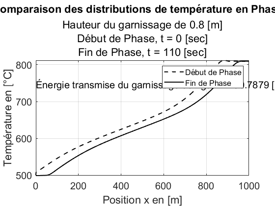
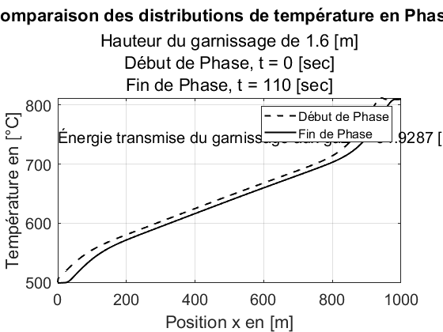
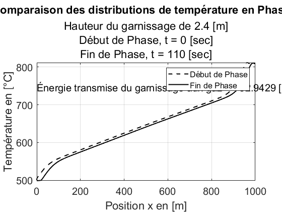

Contents
Mandat 3.2 - Intégration numérique avec trapz ;
Équipe 1:
- Loïc de Bluze,
- Anthony Drouin,
- Thomas Chaland,
- Simon Gauthier,
- Cédric Hébert,
- Louis-George Précourt,
Version en date du 6 décembre 2023;
clear, close all, clc
Calcul de l'énergie perdue par le garnissage pour chaque hauteur de garnissage ;
xg = [0.8 1.6 2.4]; t = [0, 110, 110]; prop = [2600, 1000]; data08 = cat(2, struct2cell(load('.\data_simulation_6dec\sol08'))); data16 = cat(2, struct2cell(load('.\data_simulation_6dec\sol16'))); data24 = cat(2, struct2cell(load('.\data_simulation_6dec\sol24'))); distT = {data08 data16 data24}; discrx = 1000 ; for i = 1:length(xg) % Maillage de la surface en x ; x_actu = [0, xg(i), discrx]; meshx = linspace(min(x_actu), max(x_actu), discrx); % Résultats de simulation mis sous forme matricielle ; distT_actu = distT{i}; distT_actu = distT_actu{:,:}; % Appelation de la fonction d'intégration ; [t0, tf, J_m2] = integ(x_actu, t, prop, distT_actu); % --------- Création d'une nouvelle figure à chaque nouvelle itération sur i ; figure plot(meshx, distT_actu(t(1)+1,:), 'k--', 'LineWidth', 1.5), hold on plot(meshx, distT_actu(t(end),:), 'k', 'LineWidth', 1.5), % Texte à incorporer aux figures ; txt = convertCharsToStrings(['Énergie transmise du garnissage aux gaz => ',... num2str(abs(J_m2)), ' [kJ/m^2]']); text(0.025, 750, txt, 'Fontsize', 15); txt2 = convertCharsToStrings(['Hauteur du garnissage de ', num2str(xg(i)), ' [m]']); % Mise en forme de la figure ; title('Comparaison des distributions de température en Phase 1', 'FontSize', 22) subtitle({txt2, 'Début de Phase, t = 0 [sec]', 'Fin de Phase, t = 110 [sec]'}, ... 'FontSize', 18) legend({'Début de Phase', 'Fin de Phase'}, 'FontSize', 12) xlabel('Position x en [m]'), xlim([x_actu(1) x_actu(end)]), ylabel('Température en [°C]'), set(gca, 'FontSize', 15), grid on end  